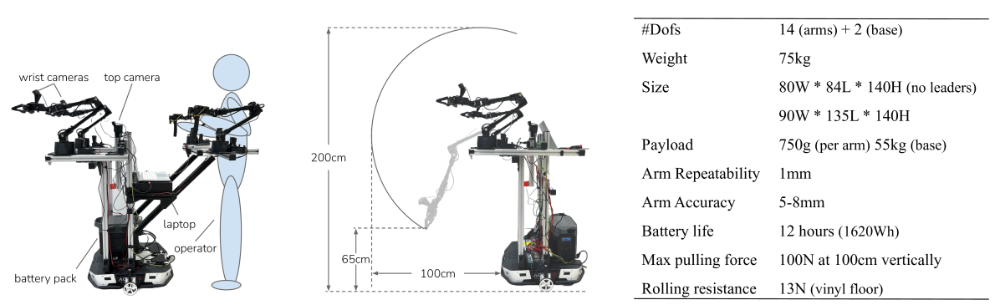
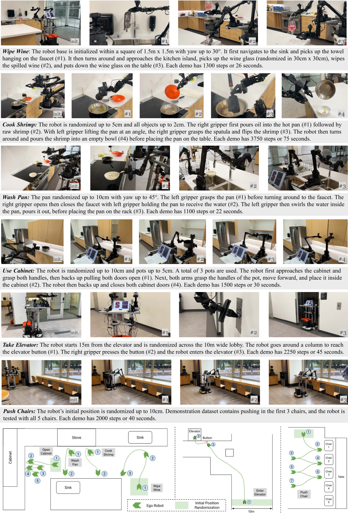

제출: 2024년 1월 4일 · 총 예산 $32K · ViperX 300 × 2 + AgileX Tracer 베이스 · 50 데모/태스크
한 줄 요약 (TL;DR)
ALOHA를 이동형 베이스 + 전신 텔레옵으로 확장한 저가($32K) 오픈 하드웨어. 오퍼레이터가 로봇 허리에 물리적으로 테더돼 저마찰 바퀴를 몸으로 백드라이브하며 양팔·베이스를 동시 조작. 태스크당 50 데모와 정적 ALOHA 825 에피소드와의 co-training만으로 요리·엘리베이터 호출·15m 이동 후 조작·양문 캐비닛 열기 등 7개 장기 모바일 매니퓰레이션을 성공. Call Elevator는 co-training으로 0% → 95%, 평균 절대 성공률 +34%p.
1배경 · 문제의식
로봇 모방학습의 대부분은 테이블탑 고정 팔에 국한된다. 요리·청소·배송 등 실사용 태스크는 이동성과 양손 조작을 동시에 요구하지만, (1) 그런 태스크의 데이터를 저렴하게 수집할 하드웨어가 없고 (2) 소량 데모로 장기 태스크를 학습하기 어렵다는 두 가지 병목이 존재. Mobile ALOHA는 (1)에 대해 $32K짜리 전신 텔레옵 워크스테이션을, (2)에 대해 정적 ALOHA 대규모 데이터셋과의 co-training이라는 단순 레시피를 제안한다.
2핵심 Contribution
저가 전신 텔레옵 플랫폼 — AgileX Tracer 이동 베이스 위에 ViperX 300 × 2. 오퍼레이터가 로봇 허리에 테더돼 저마찰 바퀴(약 13N 저항)를 몸으로 밀며 양팔 리더-아암을 동시 조작. 총 예산 $32K.
Static + Mobile Co-training 레시피 — 기존 정적 ALOHA 825 에피소드(RT-1·ACT 계열 태스크)와 새 모바일 태스크 데이터를 동일 확률로 샘플링. 정적 데이터에는 base action에 0을 zero-pad.
장기 모바일 조작 7태스크 시연 — 요리(새우 굽기), 캐비닛 정리, 엘리베이터 호출, 15m 이동 후 조작, 의자 밀기, 하이파이브 등을 50 데모만으로 자율 실행.
정적 ALOHA 데이터셋 Dstatic와 모바일 태스크별 데이터셋 Dmobile를 50:50 확률로 배치 샘플. 정적 데이터는 이동 베이스가 없으므로 base action = 0으로 zero-pad. 목적함수: L = 𝔼Dstatic[BC(aarm, 0base)] + 𝔼Dmobile[BC(aarm, abase)]. ACT / Diffusion Policy / VINN 모두에 동일하게 적용 가능.
7개 모바일 태스크
Wipe Wine (50) — 양팔 조율로 쏟은 와인을 닦기.
Cook Shrimp (20) — 새우 뒤집기·볶기·서빙 (긴 시퀀스).
Rinse Pan (50) — 팬을 들어 수도를 켜고 헹궈 건조대에 배치.
Use Cabinet (50) — 이동 → 양문 캐비닛 열기 → 무거운 냄비 수납.
Call Elevator (50) — 15m 이동 → 버튼 누름 → 엘리베이터 진입.
Push Chairs (50) — 의자 5개 밀기 (unseen 의자로 일반화 시험).
High Five (20) — 사람 접근 감지 → 하이파이브.
4실험 결과
태스크별 성공률 (with vs. without co-training)
태스크
Co-train (%)
No Co-train (%)
Δ
Wipe Wine
100
95
+5
Cook Shrimp
40
20
+20
Rinse Pan
80
95
−15
Use Cabinet
85
85
0
Call Elevator
95
0
+95
Push Chairs
80
90
−10
High Five
85
85
0
평균 +34%p. 이동거리·자유도가 큰 태스크(Call Elevator, Cook Shrimp)에서 co-training 이득이 극대화.
주요 헤드라인
Call Elevator: 소량 모바일 데이터만으론 0%, co-training 시 95%.
Cook Shrimp(장기 시퀀스): 20% → 40%로 2배 향상.
정적 ALOHA 데이터가 팔 조작의 강한 prior로 기능 — 모바일 학습 부담을 베이스에 집중시킴.
5Ablation (주요 발견)
Static:Mobile 비율: 50:50이 최적. 정적 비중을 늘리면 팔 동작이 좋아지지만 base 학습이 약화됨.
알고리즘 무관성: ACT · Diffusion Policy · VINN 세 backbone 모두 co-training 이득 관찰 — 데이터 레시피 자체의 효과임을 시사.
데모 수: 20 데모로도 co-training 시 유의미한 성공(Cook Shrimp 40%). 데이터 효율성 강조.
일반화: Push Chairs에서 훈련에 보지 못한 의자(색·모양)에도 밀기 성공.
6핵심 Figure / Table

Figure 1 — Mobile ALOHA 하드웨어. AgileX Tracer 이동 베이스 + ViperX 300 양팔. 오퍼레이터가 로봇 허리에 테더돼 저마찰 바퀴를 몸으로 밀며 양팔 리더-아암을 동시 조작하는 전신 텔레옵. (출처: arXiv:2401.02117)

Figure 2 — 7개 태스크. Wipe Wine · Cook Shrimp · Rinse Pan · Use Cabinet · Call Elevator · Push Chairs · High Five. 이동거리·양팔 협응·장기 시퀀스가 결합된 실사용 태스크. (출처: arXiv:2401.02117)
Table (Co-training 효과) — 평균 +34%p. Call Elevator 95%p 향상이 상징적. "정적 팔 데이터"라는 값싼 대량 데이터가 "모바일 태스크"의 학습 부담을 base에 집중시켜 소량 데모로 장기 태스크가 가능해지는 단순하지만 강력한 레시피임을 실증.